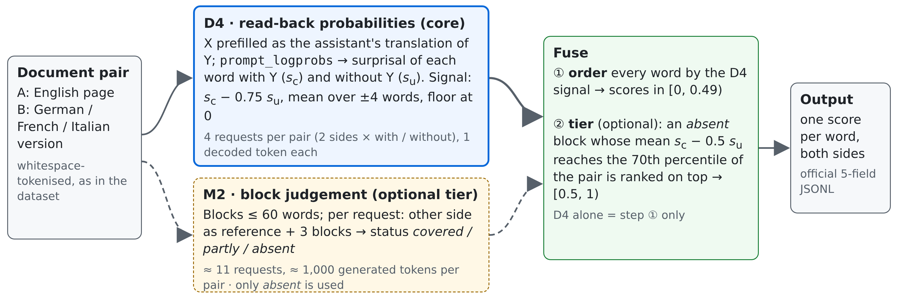
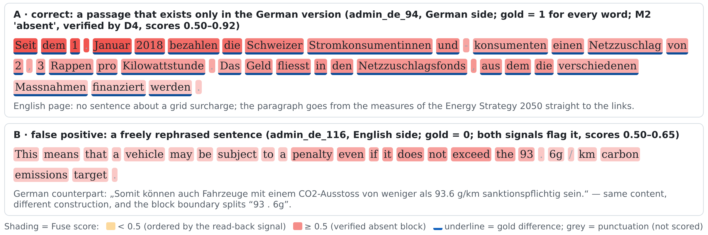

demo/viewer.html in the
repository — an offline page showing every test and development document
pair side by side, words shaded by the submitted score, gold differences
underlined, CTFAlign switchable for comparison⟨GitHub URL⟩, project root
track_2a/; make run there reproduces the test
predictionsWe use Apertus to score a document rather than ask it to write a label for every word. A word that is explained by the other-language page becomes easier to predict once that page is in the prompt; a word whose content is missing on the other side tends to remain surprising. Four teacher-forced requests per document pair measure this effect for both documents, with and without the counterpart page, and each request decodes at most one token (D4, Section 3.1). An optional second signal asks Apertus block by block whether a block has any counterpart; blocks judged absent and confirmed by the read-back signal form a top tier above the D4 ordering (M2 + Fuse, Sections 3.2–3.3). Nothing is trained.
Results on the test split (56 pairs per language; official evaluation script; one run of the configuration frozen on development data): D4 alone reaches a macro Spearman of 0.311, the submitted Fuse 0.323 (de .412 / fr .189 / it .367), and the organisers' CTFAlign word-alignment system 0.291 on the same documents. In a page-paired bootstrap, Fuse − CTFAlign is +0.032 [+0.009, +0.052]; D4 − CTFAlign is +0.020 [−0.011, +0.045] and Fuse − D4 is +0.012 [−0.001, +0.029], both positive point estimates whose intervals include zero (Section 5.2). The paper's own prompting baseline, re-run with the same Apertus-8B, scores −0.015: 47 % of its requests hit the output limit, mostly in repetition loops (Section 5.5).
Contributions: (1) contrastive read-back scoring with Apertus — a zero-training word-level signal from teacher-forced probabilities, bidirectional, on whole documents, through a hosted chat endpoint, at four requests per pair; (2) a controlled comparison and combination of generative and probabilistic judgements of the same model, including where each one breaks; (3) a reproducible evaluation — parity with the official script, page-paired uncertainty, an acceptance audit, the frozen per-document results shipped with the code, and a Docker entry point that stops instead of degrading when an endpoint lacks the required capability.
The client is plain Python (standard library only, ≥ 3.7) in a
python:3.11-slim container; the model runs behind the CSCS
hosted inference endpoint (vLLM). No GPU and no model weights are needed
on the client side. Modules: surprisal.py (D4),
blocks.py and methods.py (M2),
fuse.py (output layer), scorer.py /
stats.py / audit.py (evaluation),
client.py (retries, request log, on-disk cache),
viewer.py (demo); README.md maps every
file.

Figure 1. One document pair (English side A, other side B); both signals run in both directions. The solid path is the standalone system (D4); the dashed path adds the optional M2 tier.
swiss-ai/Apertus-v1.5-8B
(Hugging Face) for both signals; 70B was tried on development data and
not adopted (Section 5.6)https://api.inference.cscs.ch/v1 (OpenAI-compatible chat
route served by vLLM 0.23.1rc1); temperature 0, seed 0 for
every request3.1 D4: read-back probabilities. For side X of a pair (the other side is Y) we send two chat requests whose last message is an assistant message containing X verbatim:
Both use the vLLM extensions
continue_final_message=true,
add_generation_prompt=false,
prompt_logprobs=0, return_token_ids,
return_prompt_text and max_tokens=1. The
log-probabilities of the prefilled tokens are summed per whitespace
word, giving the surprisal of word w with Y in the prompt,
sc(w), and without it,
su(w). The ordering signal is
v(w) = moving mean over ±4 words of [ sc(w) − 0.75 · su(w) ], score(w) = 1 − exp(−max(v, 0) / 3).
Subtracting part of su discounts words that are surprising anyway (names, numbers, rare terms); the moving mean reflects that differences come in spans. The floor at zero is part of the method: the words that become less surprising with Y than without it (62–71 %) are all tied at the bottom, which removes noise from their mutual order (Section 5.4). The value is a ranker, not a probability of difference: it contrasts two prompts rather than estimating a pointwise mutual information, and a high value means "worth suspecting", not "proven absent". Tokens are mapped back to words through the returned prompt text (exact on every development and test request; a failed mapping is recorded, not scored as zero).
Relation to prior work. D4 follows DiffMask (Vamvas and Sennrich, 2023), which scored a word by how much a masked language model's cross-entropy for it drops when the other document is added, and contrastive conditioning (Vamvas and Sennrich, 2022), which compares translation probabilities under edited sources to find omissions and additions. It is related to context-contrastive token likelihoods such as P-CXMI (Fernandes et al., 2023) and the contrastive forced decoding of PECoRe (Sarti et al., 2024); Sarti et al. (2025) found output-distribution signals the most effective unsupervised internal signal for word-level translation errors. Our score is a task-specific ranker rather than such a measure: the two prompts are not identical up to the context, the unconditioned surprisal is discounted with a development-selected coefficient, and negative values are floored. What we add is the implementation with a general instruction-tuned decoder through a hosted chat endpoint, on whole naturally occurring document pairs in both directions (one teacher-forced pass per side and condition, where DiffMask needs one pass per masked word), and the controlled comparison with generative block judgements of the same model.
3.2 M2: block coverage judgements. Each side is cut
into blocks of at most 60 words at sentence boundaries. One request
shows the other side as REFERENCE (the whole document, or the 1,500
words around the proportionally corresponding position when it is
longer) and three numbered BLOCKS, and asks for a JSON object with one
status per block: covered, absent (the block as a
whole has no counterpart in the reference) or partly (with
verbatim quotes of the differing words). The prompt
(prompts/m2_coverage_v1.txt) contains two short examples
built from development-split sentences, uses
response_format={"type": "json_object"} and
max_tokens=900. Only the absent status turned out
to carry information (Section 5.3); partly and the quotes are
not used. An absent judgement means "not found in the reference
window", not "absent from the whole page".
3.3 Fuse. Every word is ordered by the D4 signal (scores 0.49 · score(w), i.e. [0, 0.49)). An absent block is added to a top tier (0.5 + 0.5 · score(w), i.e. [0.5, 1)) if the mean over its words of sc − 0.5 · su reaches the 70th percentile of that quantity over all words of the pair; absent blocks that the other side explains well are excluded from the tier and keep their D4 order. The four parameters (percentile 0.7, coefficients 0.5 and 0.75, window ±4) were chosen on 60 development pairs and not changed afterwards. D4 alone is the same system without the tier.
3.4 Endpoint features.
python run.py probe checks by effect that the endpoint
honours prompt_logprobs on a prefilled assistant message;
the Docker entry point stops with exit code 4 if it does not (Section
7). The CSCS gateway ends requests after about 60 s (HTTP 504); D4
requests decode one token and M2 requests about 85, far below that
limit.
SwissGov-RSD (Wastl et al., 2026a), CC-BY-4.0,
repository ZurichNLP/SwissGov-RSD at commit
1807a42: 224 English pages with their German, French and
Italian versions from Swiss federal websites, with word-level difference
labels (0 = same meaning, 0.2–1.0 = difference of increasing strength,
−1 = punctuation, not scored). Development split: 168 pairs per language
(the repository's dev/train 134 and dev/val 34); test
split: 56 pairs per language. The same English page appears at the same
position in all three languages, so all resampling is done by page.
Gold-difference words make up 12.7 / 10.2 / 18.2 % of the scored
development words (de / fr / it) and 10.7 / 8.9 / 16.4 % on test.
dev/gold_admin_{lang}.jsonl, which the official script uses
(at this commit the German dev/train and dev/val files
still carry pre-re-annotation labels; 89 of 168 documents differ).data/manifests/dev60.json). dev/val was then used
for one sensitivity check of the chosen parameters; no parameter was
changed as a result.--allow-test. The submitted
system was evaluated on test once (Section 5); the prompting baseline of
Section 5.5 was run on test separately on 8 Oct and did not influence
it. The test files are now in the repository so that the judges'
make run works on a clean checkout.data/reference/) come from the
organisers' public repositories: CTFAlign with Qwen3-Embedding-4B (Wastl
et al., 2026b) and the best encoder of the benchmark repository (mmBERT
trained with SimCSE). They are comparison rows only; no model other than
Apertus is in our pipeline. The CTFAlign test predictions were
downloaded after our test run.data/ (52 MB) holds texts
and labels, reference predictions, our predictions, the baseline outputs
and the frozen per-document results of every run behind this
report.Metric and protocol. Per language pair, the scores
and gold labels of all scored tokens of all documents are pooled into
one Spearman correlation; the headline number is the mean over the three
pairs. Our scorer and the unmodified official script
(scripts/evaluate_predictions_admin.py) agree to the last
printed digit on every split. Because the correlation is pooled, only
the order of the scores matters and scores must be comparable across
documents (no per-document normalisation). Protocol: methods and
parameters were developed on dev60; full-development and dev/val numbers
were computed once; then the configuration was frozen and the test split
was run once (six D4 requests failed with HTTP 500 and were re-sent as
planned in docs/FINAL_RUN.md, parameters untouched: 0.320 →
0.323).
5.1 Main results. Table 1 (Spearman; dev = 168 pairs per language, dev/val = its 34 held-back pairs, test = 56 pairs).
| System | Apertus | test de | test fr | test it | test | dev | dev/val |
|---|---|---|---|---|---|---|---|
| Fuse (submitted) | 8B | .412 | .189 | .367 | .323 | .340 | .321 |
| D4-contrastive (standalone) | 8B | .398 | .176 | .359 | .311 | .319 | .318 |
| M2-verified (0/1) | 8B | .344 | .147 | .247 | .246 | .277 | .208 |
| M2-absent (0/1) | 8B | .325 | .108 | .260 | .231 | .226 | .150 |
| D4-raw (sc only) | 8B | .238 | .128 | .236 | .201 | .202 | .222 |
| Paper prompt baseline (b0s) | 8B | −.019 | .004 | −.030 | −.015 | — † | — |
| CTFAlign (Qwen3-Embedding-4B) | no | .330 | .189 | .353 | .291 | .306 | .269 |
| mmBERT-SimCSE | no | — | — | — | — | .221 | .209 |
† b0s was run on dev60 only (60 pairs): −.011. D4-raw scores each word by sc (maximum over ±1 word). Human agreement on 25 doubly annotated documents (paper): de .561 / fr .436 / it .651.
Fuse has the best mean on every split. It is above CTFAlign in all three languages on the development data and in German and Italian on test, and ties it in French on test (0.18890 vs 0.18884). The gap to CTFAlign is the same on development and test data (+0.033 / +0.032).
5.2 Uncertainty. Paired bootstrap over pages (1,000 resamples, seed 0; in each resample the same pages are drawn for all three languages, with repetition; 95 % percentile intervals; "≤ 0" counts resamples in which the difference was not positive — an empirical tail share, not a p-value):
| Comparison | Difference | 95 % interval | ≤ 0 |
|---|---|---|---|
| test: Fuse − CTFAlign | +0.032 | [+0.009, +0.052] | 5 / 1000 |
| test: D4 − CTFAlign | +0.020 | [−0.011, +0.045] | 116 / 1000 |
| test: Fuse − D4 | +0.012 | [−0.001, +0.029] | 49 / 1000 |
| dev: Fuse − CTFAlign | +0.033 | [+0.020, +0.045] | 0 / 1000 |
| dev: D4 − CTFAlign | +0.013 | [−0.004, +0.027] | 61 / 1000 |
| dev: Fuse − D4 | +0.020 | [+0.010, +0.032] | 0 / 1000 |
The advantage of the submitted system over CTFAlign is supported on both splits. D4 alone is numerically above CTFAlign on both splits, but the paired intervals include zero: on this benchmark, four read-back requests per pair are on a par with the organisers' alignment system. The gain of the M2 tier over D4 alone is supported on development data and is a positive point estimate on test. (Per-system intervals overlap — test Fuse [.267, .373], CTFAlign [.241, .340] — which the paired intervals resolve by removing the shared page-to-page variation.)
5.3 What the M2 judgements contain. Share of gold-difference words inside the blocks of each M2 status (full dev; overall rate in parentheses): absent blocks .46 / .21 / .45 (de / fr / it; overall .13 / .10 / .18), covering 7–10 % of the words; partly blocks .12 / .10 / .17 — the base rate, although they cover 58–63 % of the words; covered blocks .07 / .07 / .12. The precision of the quoted words was at the base rate as well (dev60, 0.16–0.21). With this model and prompt, the absent judgement is informative in German and Italian and weak in French, and the finer judgements carry no usable information. After verification, 4.8–6.3 % of the words are in the top tier, with gold-difference rates of .65 / .27 / .59 on dev and .55 / .24 / .49 on test.
5.4 Ablations (parameters fixed at their frozen values; one change at a time):
| Variant | dev | test |
|---|---|---|
| Fuse | .340 | .323 |
| … without verification (all M2-absent blocks on top) | .323 | .312 |
| … negative signals keep their order (no floor) | .317 | .298 |
| D4-contrastive | .319 | .311 |
| … without the su discount | .250 | .248 |
| … without the moving mean | .258 | .244 |
| … negative signals keep their order (no floor) | .300 | .287 |
| … su alone (other document never shown) | .014 | .025 |
The point estimates favour each retained component on both splits, and the signal comes from seeing the other document (su alone ≈ 0); the test gain from the M2 tier is the one difference not resolved by the paired interval (Section 5.2). The parameters were chosen on dev60; the dev/val sensitivity check (percentile 0.6–0.8 × ordering coefficient 0.5–0.75) stayed within .315–.323 and led to no change. A selection effect from choosing four parameters on 60 pairs cannot be excluded completely.
5.5 The prompting baseline. b0s reproduces the
paper's prompting setup with Apertus: the repository's prompt templates
unchanged, its 250-word chunking,
response_format=json_object; our client and parser. Of 691
chunk requests on test, 322 (47 %) stopped at the output limit, 206 of
them inside a repetition loop, and 11 returned no readable JSON. Inside
the chunks that did answer, only 45–48 % of the words received a label,
and 78–83 % of those were labelled as different (gold: 9–16 %).
Restricted to the answered chunks (42–56 % of the scored words), b0s
scores −0.011 while Fuse scores 0.323 on the same words. This describes
the paper's prompt with Apertus-8B under a 60-second limit, not
prompting in general (details:
data/baselines/README.md).
5.6 Efficiency and model size. Cost per document pair on the 60 dev60 pairs, where all three methods ran on the same documents (request counts and tokens from the run logs; latency = mean of the live, uncached requests on the shared CSCS endpoint on 6 Oct 2026 × requests per pair, i.e. the sequential endpoint time; 2 pairs were processed in parallel):
| Requests | Prompt tokens | Generated tokens | Endpoint time | |
|---|---|---|---|---|
| D4 (standalone system) | 4.0 | 3,692 | 4 | 3.1 s |
| M2 | 11.4 | 20,815 | 1,001 | 7.3 s |
| Fuse = D4 + M2 | 15.4 | 24,507 | 1,005 | 10.4 s |
| b0s (paper prompt) | 3.8 | 6,455 | 8,085 | 49.4 s |
The M2 tier costs 3.4 times the requests and 2.3 times the endpoint
time of D4 alone for +0.01–0.02. A make run of the test
split (168 pairs) takes 15–25 minutes, the full set (672 pairs) one to
one and a half hours. On dev60, Apertus-70B gave no clear advantage (70B
for M2 with 8B for D4: .376; 70B for both: .363; 8B for both: .375)
while M2 took 15.6 instead of about 7 s per pair, so the 8B model is
used throughout. CTFAlign was not timed in the same environment; no
speed comparison with it is claimed.
5.7 French. All compared systems are weakest on EN–FR (test: Fuse .189, CTFAlign .189); French also has the lowest gold-difference rate (8.9 % on test) and the lowest human agreement (.436). Both of our signals separate less well there — M2's absent blocks contain 21 % gold-difference words on dev (de 46 %, it 45 %); on test the median D4 signal of gold-difference words is 0.00 against −0.17 for other words (de 0.24 vs −0.45, it 0.09 vs −0.29) — and the cause is not established.
5.8 Where the signal breaks. Table 2 groups the gold-difference spans of the development split by length and gives the median percentile rank (within the language, all scored words) of a span's mean score — 0.50 would be chance:
| Span length (dev; spans de / fr / it) | Fuse | D4-contrastive | CTFAlign |
|---|---|---|---|
| 1 word (882 / 549 / 637) | .69 / .30 / .30 | .35 / .31 / .31 | .70 / .53 / .62 |
| 2–4 words (1,354 / 1,112 / 1,699) | .68 / .60 / .59 | .66 / .58 / .59 | .69 / .60 / .64 |
| ≥ 5 words (629 / 843 / 1,332) | .78 / .66 / .72 | .79 / .67 / .73 | .72 / .66 / .68 |
The read-back signal ranks long missing passages higher than CTFAlign does, but more than half of the single-word differences (a changed number, a more specific term) end up in its zero floor, where CTFAlign's word alignment still places them above chance; the German top tier recovers part of this. Figure 2 shows a typical success and a typical false positive. Other false positives come from free but correct rephrasing, reordering beyond the M2 reference window, and boilerplate present on both sides in different wording.

Figure 2. Two development documents, scored by the frozen system (Fuse). A: a German-only passage, found by both signals. B: a correct English sentence that both signals flag because its German counterpart is constructed differently.
prompt_logprobs and assistant prefill, which are vLLM
extensions, not part of the standard OpenAI chat API. Without them the
entry point stops (exit code 4); it never delivers M2-only
predictions.cd track_2a && make run
(the template defines track_2a/ as the project root; a
Makefile at the repository root forwards to it). It builds
the image and runs src/entrypoint.sh: 1/6 offline self-test
(95 tests), 2/6 capability gate
(run.py probe --require T2b: prompt_logprobs
on a prefilled assistant message must work, otherwise exit 4), 3/6 M2,
4/6 D4, 5/6 Fuse, 6/6 audit. Every step must succeed; an inference step
that ends with failed requests (the shared endpoint answers HTTP 500 for
a few requests in most runs) is repeated up to three times, re-sending
only the failed requests; the audit exits 3 on a fatal finding (missing
documents or D4 sides, length or alignment errors, prediction file not
matching the gold order) and nothing is copied in that case. It reads
LLM_API_KEY (required), LLM_BASE_URL (default
CSCS) and LLM_NAME (default
swiss-ai/Apertus-v1.5-8B). SPLIT=test is the
default (about 2,750 requests, 15–25 min); full = all 224
pairs per language in the organisers' order; smoke = 12
development pairs, about 3 minutes. Predictions, summary and audit land
in output/<split>/; the log and raw requests stay in
output/ and runs/.SPLIT=smoke
and SPLIT=test); both paths of the entry point (capable and
incapable endpoint) were tested against a mock server.make run on 9 Oct
from a different machine reproduced 0.322 (de .412 / fr .189 / it .365)
against the submitted 0.323, with different prediction files
(docs/reproduction_2026-10-09.md).data/predictions/full/tsemin_admin_{de,fr,it}.jsonl.jsonl,
224 pairs per language in full-set order (from which the official script
selects the 56 test pairs), SHA-256 prefixes de
b7e48e339f202c9a, fr d3a8b96df69a3c59, it
514cedff5b8b20f6.data/frozen_runs/.
python tools/report_tables.py recomputes Table 1 and the
ablations, python tools/report_extra.py the D4 − CTFAlign
bootstrap, the cost table and Table 2,
python run.py stats --run data/frozen_runs/<fuse run> --vs ctfalign|d4
the other bootstrap rows, python run.py audit --run … the
acceptance audit.⟨commit hash at submission⟩.The two signals have complementary blind spots — the read-back finds missing passages, alignment finds single changed words — so a combination of D4 with a word-alignment score, and a small supervised model on development labels to turn the ranking into the annotators' severity levels, are the natural next experiments. Self-hosted weights would also expose hidden states in the same forward pass and remove the 60-second limit that shaped the baseline.
Report: Creative Commons Attribution 4.0 (CC-BY-4.0); code: Apache-2.0. All HackApertus projects are open-sourced. Code, analyses and this report were written with the help of an AI coding assistant; all design decisions, runs and checks were made and verified by the team. No model other than Apertus is part of the submitted system; CTFAlign and mmBERT appear only as published comparison predictions.